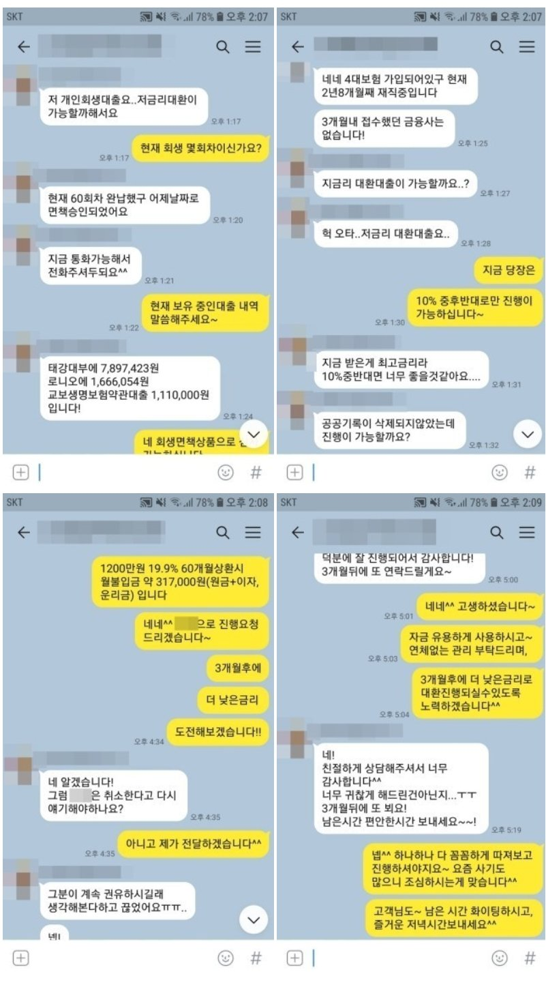

개인회생 면책 4대가입 직장인, 공공기록 삭제 전 대부대환 승인사례!
안녕하세요^^ 뱅크앤론 상담사 유미광 과장입니다^^ 오늘은 제가 진행해드린 박** 고객님의 대출 사례를 소개
해 드리겠습니다. 박** 고객님께서는 현 직장에 2년 6개월째 근무중이시며, 월소득 180만원의 직장인이셨습니
다. 사용중이신 대출로는 회생중 받으신, 캐시벅스(태강대부) 789만원, 에이원대부 166만원, 교보생명약관대출
111만원이셨고, 회생중 받으셨던 대부를 대환하며 여유자금이 필요하셔서 뱅크앤론으로 문의 주셨다고 하셨습
니다. 상담 후, 회생면책까지 받았으나 아직 공공기록은 삭제 전 인것을 확인하고, 회생면책 상품으로 조회해드
린 결과, 한 금융사에서 대부 2건 대환조건으로, 1400만원 19.9%에 진행 가능하시다는 결과를 받았습니다. 이에
박** 고객님께서도 매우 만족하셨습니다. 자세한 사항은 아래 저와 박**고객님의 카톡대화 내용을 참고하실 수
있습니다. 감사합니다^^

[출처] 개인회생 면책 4대가입 직장인, 공공기록 삭제 전 대부대환 승인사례! (뱅크앤론 (직장인대출,개인회생자대출,개인회생대출 등..)) | 작성자 뱅크앤론 유과장